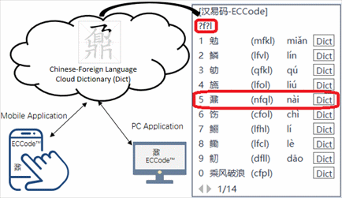
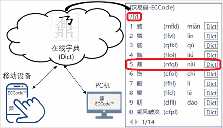

What Problems to Solve
As we all know, the training of listening, speaking, reading and writing skills
involved in language application is limited by the amount of vocabulary of users of the language.
At present, on the one hand, restricted by the teacher's limited energy, it is impossible for the teacher
to teach the learners how to correctly write each Chinese character and explain its meaning; on the other
hand, there are many online dictionaries on the Internet, which are not only equipped with an animation to
demonstrate the stroke order of writing a Chinese character correctly, but also provide the meaning
translation and usage of each Chinese character. However, these resources are used very low because the
beginners learning Chinese do not have effective means for retrieval. Therefore, how to make full use of
the internet resources available to foreign Chinese learners to independently learn Chinese characters and
quickly expand their Chinese vocabulary should be the implied meaning of "A master is responsible for
teaching basic knowledge, and further study depends on one's own efforts", and also the task goal that TCFL
should achieve.
However, the Internet application of Chinese language poses new challenges to teaching Chinese as a foreign
language (TCFL for short). The traditional practice of ignoring the Internet application of Chinese has
been difficult to adapt to the urgent needs of foreign Chinese learners and users in the Internet Era. In
other words, in the face of the Internet application of Chinese, should the TCHL keep pace with the times
and expand and improve the teaching content?
For example, as shown in the figure below, Tom in the picture has just begun to learn Chinese for three
months. His basic situation is as follows:

Fig.1 Tom Looking forward to Looking up the Chinese Character Dictionary
1. He has been familiar with the pronunciation of each Pinyin;
2. He has completely mastered the basic stroke knowledge of Chinese characters;
3. He has learned some of the most commonly used radicals.
But, he did not know the character "李", and no one around him could tell him how to pronounce the Chinese
character "李", or what its pinyin is, furthermore, he hasn't mastered the Chinese character query method
such as stroke (According to David Moser in his article
"Why Chinese Is So Damn Hard?" complaining foreigners learning Chinese character dictionary query
method, just like learning a time consuming art)···. That is to say, Tom in the picture can't input the new
character "李" into the e-dictionary at this time. In fact, just at this very time, Pinyin has lost any
value to Tom! And the significance of modern science and technology for teaching foreigners to master the
correct writing of Chinese characters has disappeared.
In addition, for those foreigners and Chinese who have mastered the same number of Chinese characters, the
speed of using computers to input characters is also greatly different. For example, the same master of 500
Chinese characters, also knowing the two characters "蜂" and "蜜", but the Chinese people in the process of
growing up can learn the difference between "蜂蜜" and "蜜蜂" naturally from the surrounding language
environment, while 99.5% of foreign Chinese learners around the world do not have this environmental
advantage to naturally accumulate their vocabulary. It is for these and other reasons that American
Sinologist David Moser came to the conclusion that Chinese is "losing the battle of languages" in the
Internet" (See Chapter 15 "A Losing Battle: The Internet" in A Billion Voices: China's Search For A Common
Language by David Moser).
But actually, paperless Chinese office in the information age is also an application form of "Chinese
language" in the "virtual world", or in other words, "virtual world" is also an application spot of Chinese
language which is an unavoidable problem in TCFL. In this era, Chinese teaching as a foreign language
should be in addition to the traditional listening, speaking, reading and writing, and add a "keyboard"
application which can reflect the basic characteristic of the Internet era of Chinese with the times.
However, as to the keyboard application of Chinese, in the face of foreigners' Chinese learning and
application in the VIRTUAL WORLD, the biggest dilemma of the TCFL is reflected in the following two
aspects: one is that the efficiency barrier of querying e-dictionary is insurmountable, the other is that
the efficiency of Chinese keywriting (namely writing by keyboard or typing) is too low due to the limited
vocabulary. For example, when an Arab learns German, he can master German letters and phonetic symbols in
two months. After that, he can independently and efficiently search for new German words in any time and
space. However, it also took him two or three months to master the Chinese Pinyin, the basic knowledge of
strokes and some common radicals of Chinese characters, it didn't mean that he had the convenience of
dictionary inquiry for learning new Chinese characters. As a result, when foreigners are learning Chinese,
their vocabulary accumulation speed is much lower than when they learn alphabetic language. In view of
this, the foreigners' acquisition of the speed of keywriting Chinese characters which is equal to that of
Chinese people and satisfactory is almost hopeless.
As the saying goes, the problem is the opportunity of invention and creation. It is because of the new
challenges of the TCSL in the Internet era and the dilemma of being unable to cover all-sides due to the
teachers' limited energy in the traditional teaching of correct writing of Chinese characters that the Easy
Chinese Code™ (ECCode™) and the concept of dynamic independent learning of Chinese based on it have been
born at the right moment. Its integrated design with the online dictionary solves the above two problems
well and provides the technical feasibility for making the task goal of the TCSL keep pace with the times
in the Internet era (See Figure 2 below).

Fig.2 Illustration of Application Model of Correct Chinese character Stroke Order and Literacy Dictionary
Finally, we make a tabular comparison of human-computer dialogue tools for Chinese character information processing, so that readers can have an overall understanding of these tools.
| Attribute Division of Primary and Secondary Tools | Man Machine Dialogue "Bridge" | Comprehensive Evaluation Standard | Competition Situation |
| Primary Tools | Hard
or soft keyboard (Such as wubi, pinyin input method) |
A combination of a Chinese learning tool and an efficient Chinese typing tool for foreigners | No similar products |
| Secondary Tools | Voice input/machine translation | No voice input if being unable to read the character out | |
| Image
recognition input (Such as writing, OCR scanning technology) |
In
the early stage of learning Chinese by foreigners, few people use these artificial intelligence
technologies to learn Chinese because of the main reasons as follows: ● Unfamiliar with new characters; ● It does not meet the convenience requirement of learning Chinese anytime and anywhere |
解决什么问题
众所周知，语言应用所涉及到的听说读写能力培养，均受制于这门语言用户词汇量的多寡程度。
目前，一方面，受制于教师的精力有限，教师不可能就每一个汉字都教一遍学习者如何正确地书写这个汉字并解释其字意；
另一个方面，互联网上涌现了很多在线字典，这些字典不但配有动画演示汉字的正确书写笔顺，也给出了汉字的字意解释和使用方法。
但是，这些资源却由于初学汉语者没有有效的手段进行检索而被使用率极其低下。所以，如何充分利用触手可得的网络资源，
让外国汉语学习者能够独立自主地学习汉字、自行扩大汉语词汇量，这应该是“师傅领进门，修行在个人”的寓意所在，也是对外汉语教学应该达成的任务目标。
但是，汉语的互联网应用，对对外汉语教学提出了新的挑战。那种传统的、对汉语的互联网应用不闻不问的作法，已经很难适应外国汉语学习者和使用者的迫切需求了。换句话说，面对汉语的互联网应用，汉语的对外教学要不要与时俱进、做教学内容上的扩充和改进呢？
例如，以下图所示为例。图中的Tom刚开始学习汉语才3个月，他的基本情况是：

图1 想查汉字字典的Tom
1. 他已经完全掌握了汉语拼音；
2. 他完全掌握了汉字的基本笔画知识；
3. 他学过了一些最常用的偏旁部首。
但是，他遇到了这个“李”字不认识，身边也没有人能够告诉他这个汉字“李”应该如何发音、或者其汉语拼音字母是什么，他还没有掌握诸如笔画一类的汉字查字法（据莫大伟[David Moser]在其文章《Why
Chinese Is So Damn Hard?》中吐槽外国人学习汉字字典查询方法，就如同在学习一门艺术一样极其耗费时间）……。也就是说，此时图中的Tom没有办法把这个生字“李”输进电子字典里面。每当这个时候，汉语拼音对于Tom来说，就失去了任何价值！而那些配有笔顺动画演示的在线字典对于教授外国人掌握汉字正确书写的意义也荡然无存了。
此外，对于掌握了相同数量汉字的外国人和中国人来说，他们利用电脑进行文字输入的速度也是天壤之别的。例如，同样是掌握了500个汉字，同样都认识“蜂”和“蜜”这两个字，但是中国人在成长的过程当中，可以从周围的语言环境中自然地得知“蜜蜂”和“蜂蜜”的区别，而99.5%的外国汉语学习者则没有这种自然积累词汇量的环境优势。也正因为诸如此类的诸多原因，才导致美国汉学家莫大伟（David
Moser）得出了汉语正在“落败于互联网”的这个结论（参见莫大伟著作《A
Billion Voices: China's Search for a Common Language》的第十五章“A Losing Battle: The Internet”）。
但事实上，信息时代的中文无纸化办公也是“汉语”在“虚拟世界”里面的一种应用形式，或者说，“虚拟世界”也是汉语的一种应用场合，这是对外汉语教学无法回避的一个问题。在这个时代背景下，汉语对外教学应该在传统听说读写之外，再增加一个“键”，才能够体现这个互联网时代汉语与时俱进的基本特点。
然而，就汉语的键盘应用而言，目前对外汉语教学面对外国人虚拟世界的汉语学习和应用时，其最大的困境体现在两个方面：一个是查询电子字典的效率障碍难以逾越，另一个受限于词汇量太少而导致汉字键写的效率太低。例如，一个阿拉伯人学习德语，他可以用2个月的时间掌握德语字母和音标，并在此之后，他就可以独立、高效地在任何时空下查询德语新单词了。但是，同样是花费两三个月的时间，在他熟练掌握了汉语拼音和汉字基本笔画以及一些常有的汉字偏旁部首之后，他并不享有这种汉字生字学习的字典查询之便利性。这就导致外国人在学习汉语时，其词汇量积累的速度就远远地低于他们学习拼音语言时词汇量的积累速度。有鉴于此，其获得等价于中国人的、满意的汉字键写的速度当然也就遥遥无期了。
俗话说，问题所在，就是发明创造的机会所在。正是因为互联网时代对外汉语教学任务所面临的新挑战、以及传统汉字正确书写教学所面临的、由于教师精力有限而不能面面俱到的困境，《汉易码™》及其基于其上的“汉语动态自主学习”理念才应运而生了。其与在线字典的一体化设计，很好地解决了上述两个问题（参见下面图2示意），为互联网时代对外汉语任务目标的与时俱进提供了技术可行性。

图2 汉字书写与识字字典应用示例
最后，我们把汉字信息处理的人机对话工具做个表格化对比，以便读者对这些工具有个整体性的认识。
| 工具主次属性 | 人机对话“桥梁” | 综合评价标准 | 竞争现状 |
| 主流工具 | 软硬键盘 (如五笔、拼音输入法) |
集汉字学习工具与高效的外国人用中文打字工具于一体 | 没有同类产品 |
| 支流工具 | 语音输入/机器翻译 | 不会读就无法语音输入 | |
| 图像识别输入 (书写、OCR扫描技术) |
在外国人学习汉语的初期，几乎没有人使用这些人工智能技术学习汉语，其主要原因是： ● 对生字书写不熟悉； ● 不满足语随时随地学习汉语的便利性要求。 |